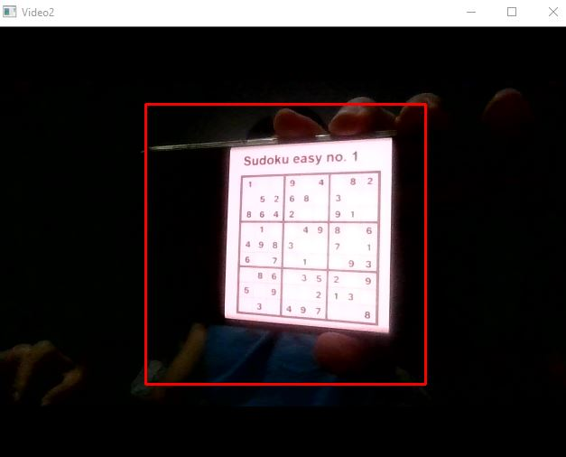
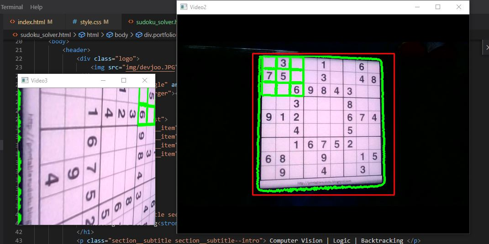
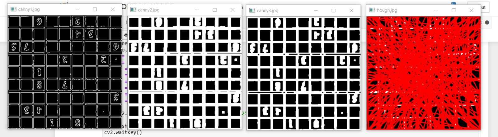
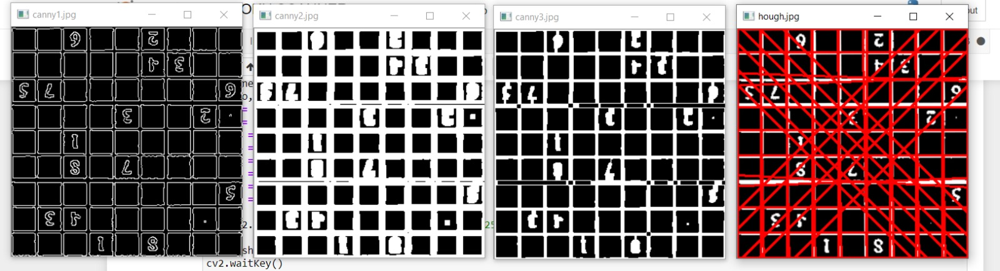
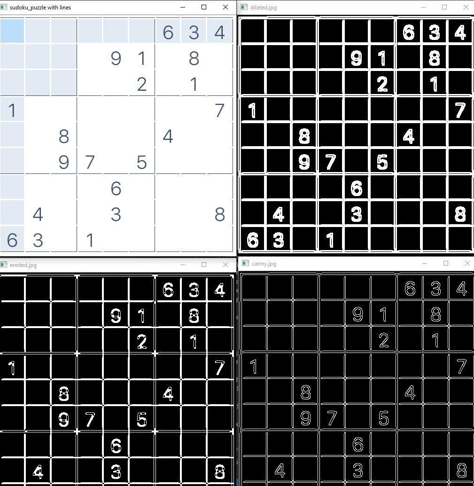
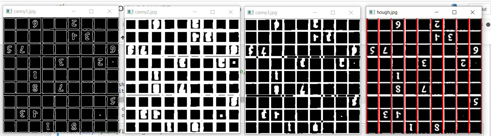
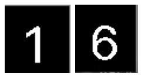
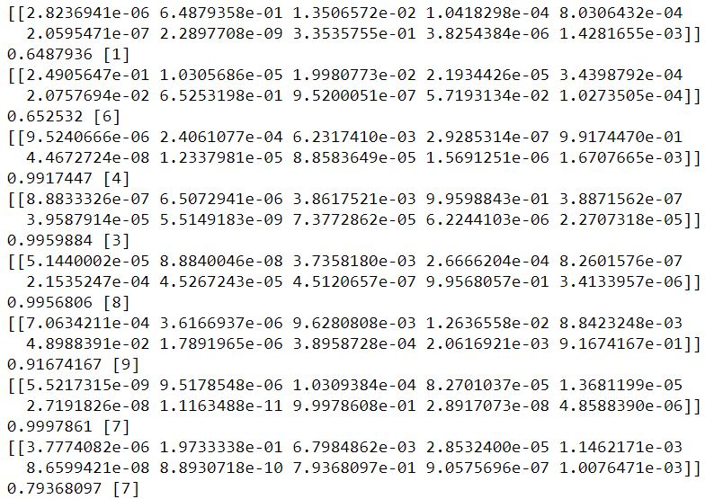
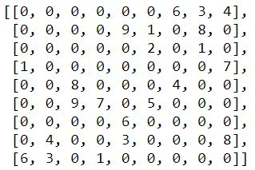

Computer Vision | Logic | Backtracking
Every Sunday morning, my mom starts the day with a Sudoku puzzle before heading off to work. For those who play alot of Sudoku, sometimes the puzzle requires you to make a guess - these are typically the 'harder' puzzles because to verify that a guess was correct requires going down the rabbit hole of solving the rest of the puzzle on that assumption until the puzzle is solved, or the guess is proved false.
I thought it would be fun to codify the logic I use to solve the puzzles and determine the exact point in the puzzle where I am truly forced to make a guess. At this point I implement a backtracking approach to finish off the puzzle (for completion's sake).
I 'deployed' this project on a Jupyter Notebook (would be fun to turn it into an app in the future) and it uses a webcam to take a screenshot of a Sudoku puzzle when it detects one on screen. Using some computer vision, filtering, hough line detection, and grid coordinate mapping, I isolate each number in its own cell, crop each number into an image and feed it into my very own neural network trained on MNIST data with the intention of being able to feed half-done puzzles into this pipeline.
The predicted numbers are then stored relative to each other in a list of lists, and I begin applying a suite of axioms I use to solve Sudoku puzzles until the axioms do not allow further progress. The backtracking algorithm then kicks in at this point to finish the puzzle off. The entire project is already in a Jupyter Notebook which makes it very readable hence I will only show the highlights here.
Grid mapping can be hard, thankfully my 'app' allows you to keep attempting to scan a nice shot of your puzzle
The gridlines of the image captured were not clear enough and the Hough line detection algorithm identified too many potential lines
By tweaking the filter settings and order, clearer lines can be generated
A lot of tweaking is required. Always good to see what you are doing in CV
At some point the image was clear enough that by enforcing the Hough line detection algorithm to identify 10 vertical lines and 10 horizontal lines that are a even distance apart (image length divided by 10 with some margin
With the gridlines detected, identifying the intersection points is trivial and the cell co-ordinates of each number can be determined, allowing me to crop each number out
Examples of isolated numbers
Number predictions - each value is the predicted probability of being a specific number. Most likely number is stored in the list of lists
List of lists after the prediction, 0 is a placeholder for empty cells
# Implement basic rule (row, col, grid) checker for all empty cells (cell value = 0)
import copy
def basic_check(sudoku_grid_input):
updated_sudoku_grid = copy.deepcopy(sudoku_grid_input)
for row_id in range(0,len(updated_sudoku_grid)):
for col_id in range(0,len(updated_sudoku_grid[0])):
# If cell has more than one possibility, see if we can remove more possibilities with Logic 3
if len(updated_sudoku_grid[row_id][col_id]) > 1:
row_check_set = set()
other_col_ids = {0,1,2,3,4,5,6,7,8} - {col_id}
for other_col_id in other_col_ids:
# Basic rules only used confirmed values (one possibility in that cell) to make eliminations
if len(updated_sudoku_grid[row_id][other_col_id]) == 1:
row_check_set = row_check_set | updated_sudoku_grid[row_id][other_col_id]
column_check_set = set()
other_row_ids = {0,1,2,3,4,5,6,7,8} - {row_id}
for other_row_id in other_row_ids:
if len(updated_sudoku_grid[other_row_id][col_id]) == 1:
column_check_set = column_check_set | updated_sudoku_grid[other_row_id][col_id]
block_check_set = set()
for block_rows in range(int((row_id)/3)*3,int((row_id)/3)*3+2+1):
for block_cols in range(int((col_id)/3)*3,int((col_id)/3)*3+2+1):
if len(sudoku_grid_input[block_rows][block_cols]) == 1:
block_check_set = block_check_set | updated_sudoku_grid[block_rows][block_cols]
updated_sudoku_grid[row_id][col_id] = updated_sudoku_grid[row_id][col_id] - row_check_set - column_check_set - block_check_set
return(updated_sudoku_grid)This logic is also the way you interpret the rules of Sudoku
# Advanced Logic 4: This is a relaxation of Advanced Logic 2 where if 'a union of cell possible values' = 'to the number of cells unionized', all other cells
#in the row/col/blk will remove the union of cell possible values from their possible values (instead of just matching identical cases with identical number of instances)
# Every permutation of the row/col/grid valid cells (cells with > 1 possible value) from 2 up to 'len(valid cells) - 1' (going up to len(valid cells)' means nothing is removed since nothing outside the union set
# The check for each permutation is (len(union set)) = 'number of sets combined' e.g. 3 sets: {1,2,3}, {2,3}, {2,3}, unioned will give unioned set {1,2,3} with length, {1,2,3} is then removed from all other cells in the row/col/blk
# Function to get combinations of sets within a list of sets, returns list of unioned sets and list of sets to remove the unioned sets from, ordered by index
from itertools import combinations
def get_valid_unions(list_of_sets):
valid_unions = []
non_unioned_sets = []
for union_size in range(2,len(list_of_sets)):
combi_size = (combinations(list_of_sets,union_size))
for combi in combi_size:
cell_set_union = set()
for cell_set in combi:
cell_set_union = cell_set_union | cell_set
if len(cell_set_union) == union_size:
valid_unions.append(cell_set_union)
non_union_set = []
for cell_set in list_of_sets:
if cell_set not in combi:
non_union_set.append(cell_set)
non_unioned_sets.append(non_union_set)
#print(valid_unions,non_unioned_sets)
return(valid_unions,non_unioned_sets)
def logic4_check(sudoku_grid_input):
updated_sudoku_grid = copy.deepcopy(sudoku_grid_input)
# Conduct row checks
for row_id in range(0,len(updated_sudoku_grid)):
row_combi_list = []
for col_id in range(0,len(updated_sudoku_grid[0])):
if len(updated_sudoku_grid[row_id][col_id]) > 1:
row_combi_list.append(updated_sudoku_grid[row_id][col_id])
valid_unions,non_unioned_sets = get_valid_unions(row_combi_list)
for col_id in range(0,len(updated_sudoku_grid[0])):
for set_index in range(0,len(valid_unions)):
if updated_sudoku_grid[row_id][col_id] in non_unioned_sets[set_index]:
print("LOGIC 4 ROW CHECK TRIGGERED")
print(row_id,col_id)
updated_sudoku_grid[row_id][col_id] = updated_sudoku_grid[row_id][col_id] - valid_unions[set_index]
# Conduct col checks
for col_id in range(0,len(updated_sudoku_grid[0])):
col_combi_list = []
for row_id in range(0,len(updated_sudoku_grid)):
if len(updated_sudoku_grid[row_id][col_id]) > 1:
col_combi_list.append(updated_sudoku_grid[row_id][col_id])
valid_unions,non_unioned_sets = get_valid_unions(col_combi_list)
for row_id in range(0,len(updated_sudoku_grid)):
for set_index in range(0,len(valid_unions)):
if updated_sudoku_grid[row_id][col_id] in non_unioned_sets[set_index]:
print("LOGIC 4 COL CHECK TRIGGERED")
print(row_id,col_id)
updated_sudoku_grid[row_id][col_id] = updated_sudoku_grid[row_id][col_id] - valid_unions[set_index]
# Conduct block checks
for row_id in range(0,len(updated_sudoku_grid)):
for col_id in range(0,len(updated_sudoku_grid[0])):
block_combi_list = []
for block_rows in range(int((row_id)/3)*3,int((row_id)/3)*3+2+1):
for block_cols in range(int((col_id)/3)*3,int((col_id)/3)*3+2+1):
if len(updated_sudoku_grid[block_rows][block_cols]) > 1:
block_combi_list.append(updated_sudoku_grid[block_rows][block_cols])
valid_unions,non_unioned_sets = get_valid_unions(block_combi_list)
for block_rows in range(int((row_id)/3)*3,int((row_id)/3)*3+2+1):
for block_cols in range(int((col_id)/3)*3,int((col_id)/3)*3+2+1):
for set_index in range(0,len(valid_unions)):
if updated_sudoku_grid[block_rows][block_cols] in non_unioned_sets[set_index]:
print("LOGIC 4 BLK CHECK TRIGGERED")
print(block_rows,block_cols)
updated_sudoku_grid[block_rows][block_cols] = updated_sudoku_grid[block_rows][block_cols] - valid_unions[set_index]
return(updated_sudoku_grid)
logic4_check(sudoku_grid)
This method reduces the possibilities in each cell in a less apparent way, I use it when stuck on some puzzles